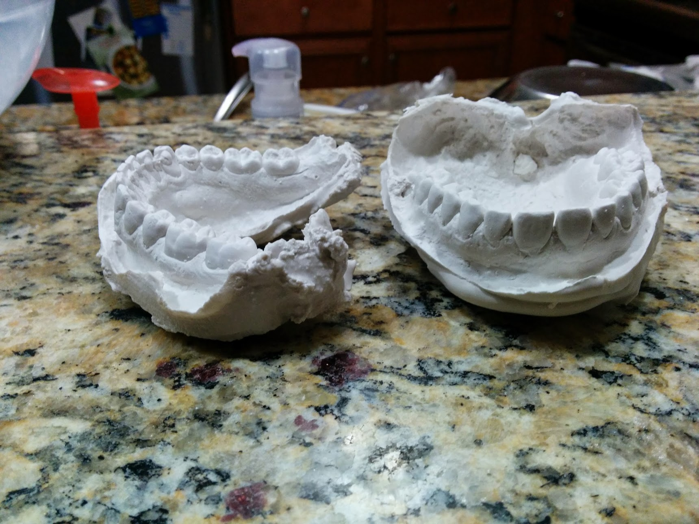
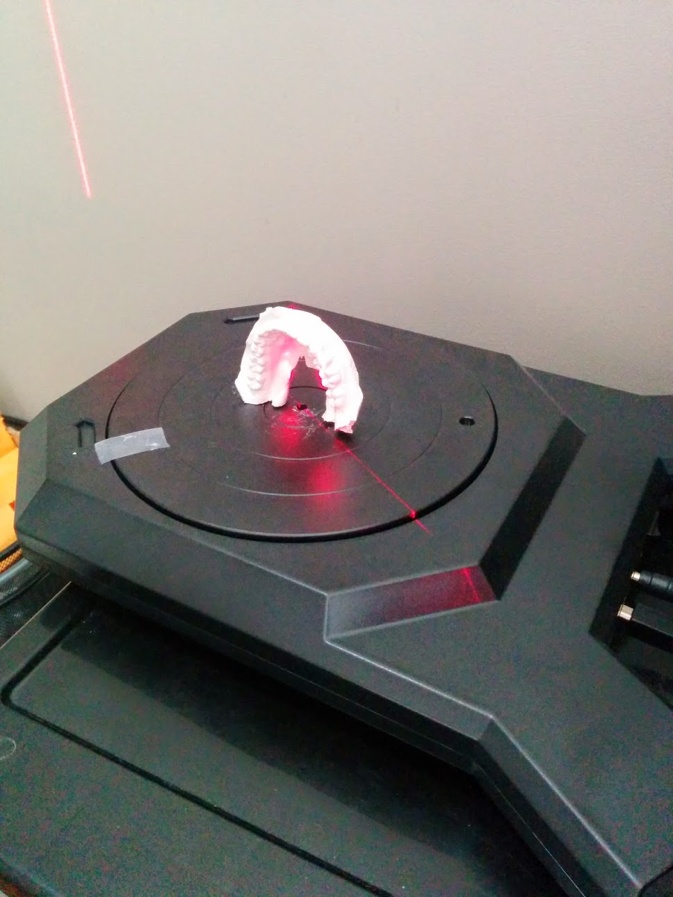
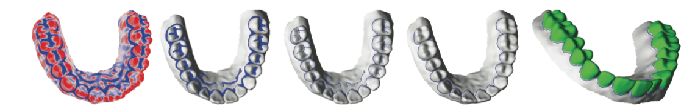
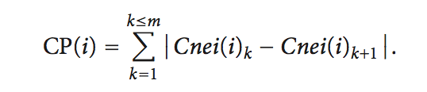
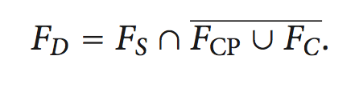

Positive Mold
First, one’s negative teeth mold is taken in alginate material. A positive mold, created with ground stone plaster material, is crafted in order to create a digital representation in a .STL file format. Digitization is performed by a MakerBot digitizer using Makerware.

Scanning
Scanning of the positive is done with a Makerbot Digitizer. We have found that the higher resolution the scan the better the results. The file output .STL is desired.

Graphic Manipulation

The first step in manipulating the teeth is to separate each individual tooth from the model so they can be adjusted individually. This is a complex process and most of our work thus far has been conducting research and creating code to accomplish this step. We have been following the methods outlined in the paper by Yan et al.'s "Single-Tooth Modeling for 3D Dental Model" (2010). The workflow is as follows:
- Import .STL file into Blender
- Rotate/Translate to prepare for manipulation
- Cut/Crop any unneeded parts of the model
- Apply differential equation to filter valleys and curves
- Select Valleys
- Perform open and close morphological operation to find selected edge
- Use point trace method to interactively select regions between teeth and delete previously found fusion edges
- Fill in holes created in previous steps
Finding the valleys and curves in the model allows us to distinguish between natural tissue (gums) and the teeth themselves. This also separates any teeth that seem to be connected in the model (fusion regions). Applying an equation to the data to find the mean curvature and filter on a range allows us to find and highlight these valleys and curves. Image below shows teeth after highlighting on this mean curvature.
INSERT IMAGE WITH HIGHLIGHTING
Teeth are still part of the larger model at this point but are now ready to be separated. This is step is called ‘segmentation boundary extraction’ and uses vertex complexity to decide where to cut the tooth from surrounding material. From the paper we follow these instructions:
∀i ∈ F′; let Cnei(i) denote the 1-ring neighborhood of vertex vi ordered counter clockwise. ∀k ∈ Cnei(i); if k ∈ F′ at the same time, we record Cnei(i)k = 1 or Cnei(i)k = 0. With the above assumption, the vertex complexity CP(i) of vi is defined as follows:

If CP(i) is greater than or equal to 4 the vertex v(i) is defined to be complex. If Cnei(i) is a subset of F’ (index set of vertices in feature/highlighted region) vertex v(i) is defined as center vertex. Again referencing the paper:
The set of satellite vertices is denoted by FS, center vertices by FC, and complex vertices by FCP. Then, we obtain the set of candidate vertices FD that will be removed as follows.

Vertices are removed from the candidate set FD one at a time and each vertex’s neighboring vertex complexity is recalculated directly after its removal. FS , FC , FCP and FD are each updated. This is repeated until the ‘shape’ of the feature region stops changing. Some additional pruning may be required and is further outlined in the paper “single-tooth modeling for 3d dental model”. Once this is complete we will have an accurate segment boundary that separates each tooth. The teeth are then cut along that boundary to acquire individual models for each. Segmentation boundary selection is where our current work is being conducted. The math and programming involved are complex but we feel confident that it can and will be done.
Once this process is implemented the teeth can be translated and rotated individually to desired positions. The actual translation and rotation of each tooth has fallen outside of the scope of this class project as time constraints did not allow us to get there. This is a reason we will be adamantly distributing this project to the open source community. Having more team members will allow these next steps to be implemented faster as well as allow for outside editing of currently implemented procedures.